Carol’s table · Hand & Foothand 3 of 4
Games RulesLeaderboards
RulesLeaderboards
RulesLeaderboards Activities 2 newNo activities yet. Friend requests, game invites and updates will appear here.
Activities 2 newNo activities yet. Friend requests, game invites and updates will appear here. hootnholler invited you to a Spades table2m
hootnholler invited you to a Spades table2m jen11099 liked you1h
jen11099 liked you1h Friends 23 onlineNo friends yet. Like players you enjoy playing with to see them here.
Friends 23 onlineNo friends yet. Like players you enjoy playing with to see them here. hootnholler
hootnholler nomore35jen11099
nomore35jen11099 El_Che
El_Che- Guest #12
AccountSettingsSign inLogout
Games

- Guest #12
Games
- Guest #12
Games
- Guest #12
Games
- Guest #12
Play card games in good company
Join a table or play our robots. Settle in, unwind
and make friends. Free to play, hard to stop.
players online
·
open tables
1,214 players online
·
143 games live
·
87 seats open
LIVE
1214 players online
143 tables live
87 seats open
LIVE
1214 playing
143 tables
87 open
LIVE
1214 playing at 143 tables
LIVE
1214 players online
143 tables live
87 seats open
Popular games
341 playing
173 playing
64 playing
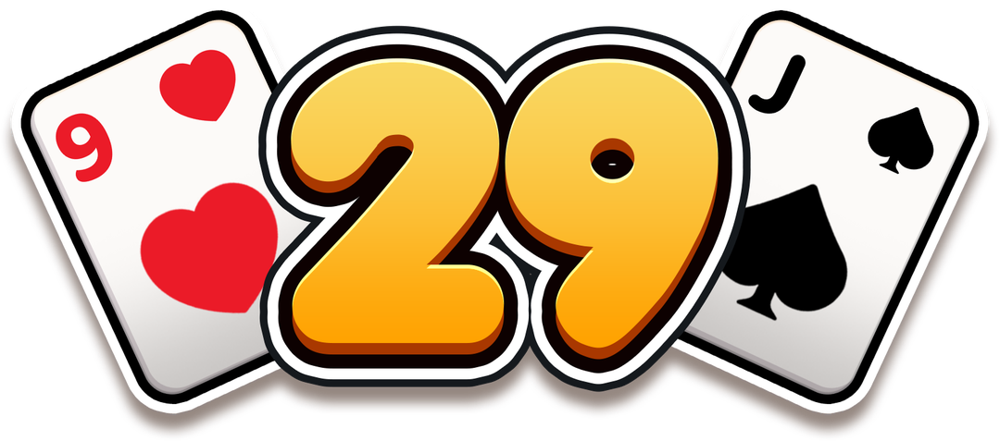
212 playing
96 playing
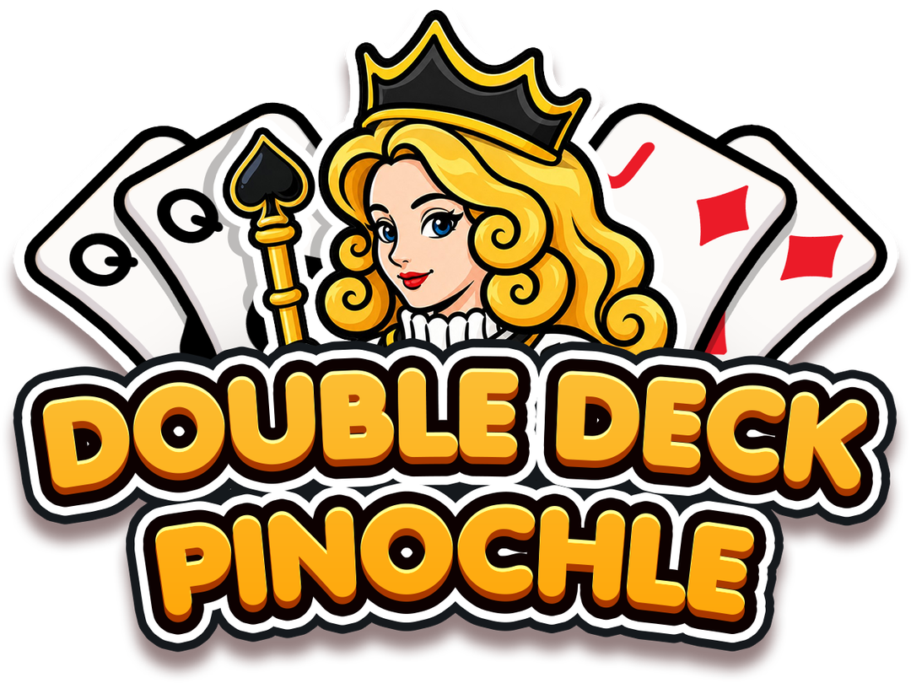
128 playing
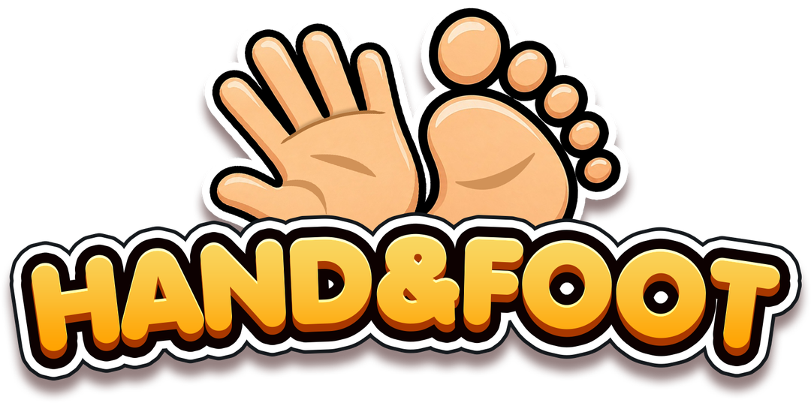
87 playing
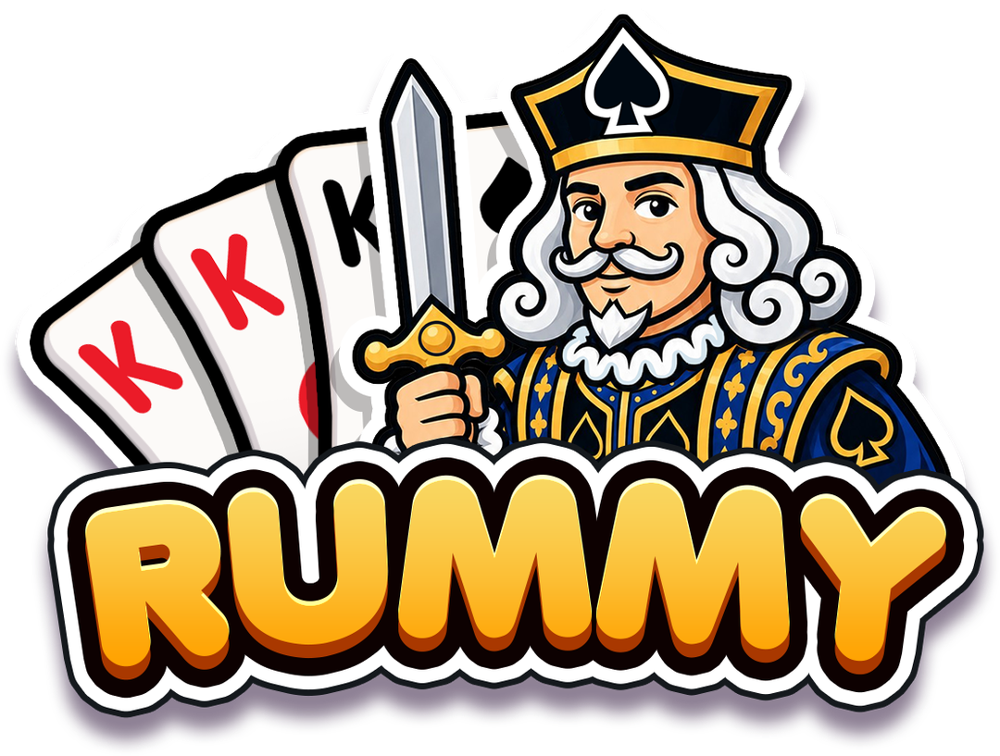
45 playing
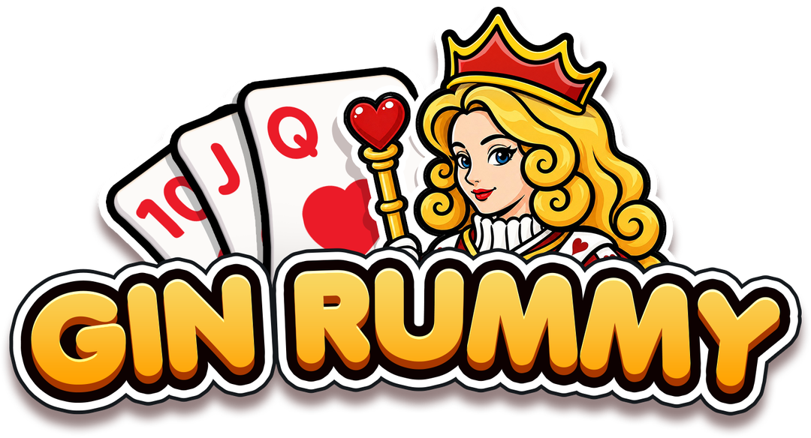
58 playing
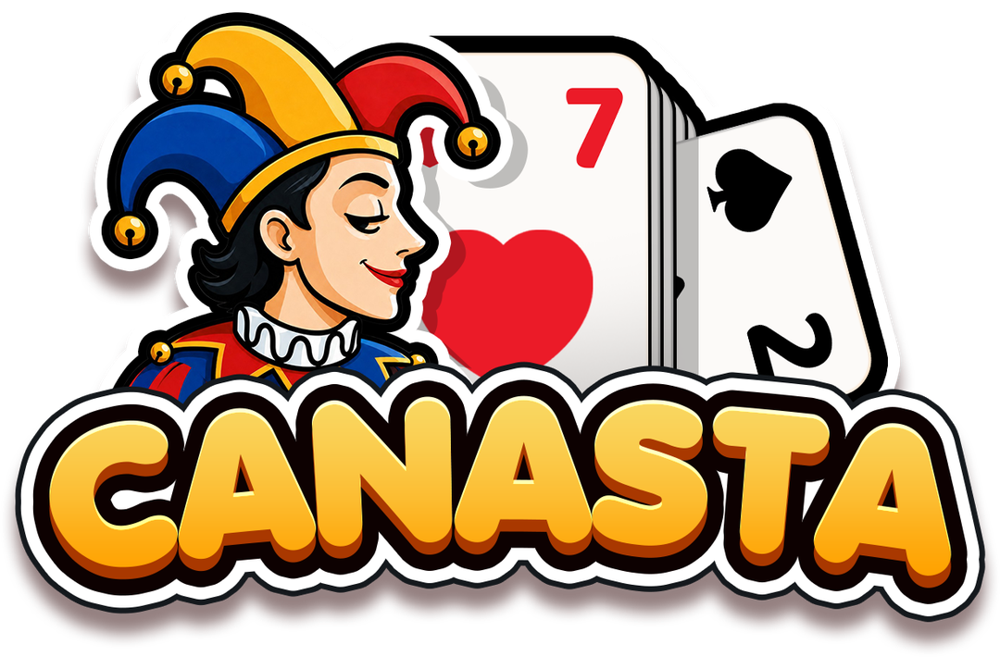
Open tables
All games46 tablesHearts12Spades9Euchre8Double Deck Pinochle5Hand & Foot4Gin Rummy3
More
- Twenty-Nine2
- Rummy1
- Canasta1
- Pinochle1
- Cribbage0
- Go Fish0
- Sergeant Major0
- Whist0
- Crazy Eights0
- Bridge0
- Old Maid0
- Sheepshead0
Marge
97Empty
carl52
91Empty
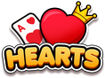
HeartsEnds at 100">
0 min
Vera
99Duckling
96Bot Ada
Hank
80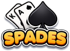
SpadesYou take Bot Ada’s hand and score
Plays to 500">
12 min
BobK
Empty
Empty
Empty
Dealer may pass
No bots
Plays to 10">
0 min
wendy_h
93PragueJoe
98north4th
88Empty
Plays to 150">
0 min
cardShark52
99mollyb
Robot 2
Empty
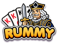
RummyYou take Robot 2’s hand and score
Plays to 500">
10 min
Empty
Empty
Empty
Empty
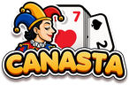
CanastaYour table · plays to 5,000">
New table
Live tables
GinTonic
Carol
Marta
cardShark52
Four hands, then the highest score wins">
Rosie
HeartsAce
Guest #4821
moonshot
Ends at 100">
Heartshand 5 · to 100
spadesfan
BigDeal
Robot 3
Hank
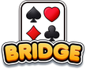
BridgeRubber scoring, no target">
Bridgein play for 34 min
Leaderboard & daily deal
HeartsSpadesEuchreDouble Deck PinochleHand & FootGin RummyTwenty-NineRummyCanastaPinochleCribbageGo FishSergeant MajorWhistCrazy EightsBridgeOld MaidSheepshead
More
- Hearts
- Spades
- Euchre
- Double Deck Pinochle
- Hand & Foot
- Gin Rummy
- Twenty-Nine
- Rummy
- Canasta
- Pinochle
- Cribbage
- Go Fish
- Sergeant Major
- Whist
- Crazy Eights
- Bridge
- Old Maid
- Sheepshead
RankPlayerElo
42 2mollyb1,506
43TableTalker ♥1,498
44 1cardShark521,493
45PragueJoe1,487
46 3Holger1,481 12
47wendy_h1,476
48 2GinTonic1,470
49north4th1,465
Refreshes in 6:12:34See all
2 wins
10
20
31
MoTuWeThFrSaSu12345678910111213141516171819202122232425262728293031
Deal248
Takes about8 minutes
Won today by312 of 1,204
Trick-taking games
173 playing
341 playing
51 playing
44 playing
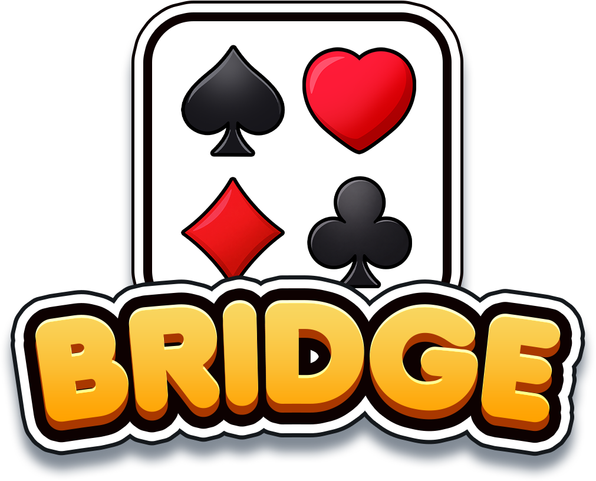
58 playing
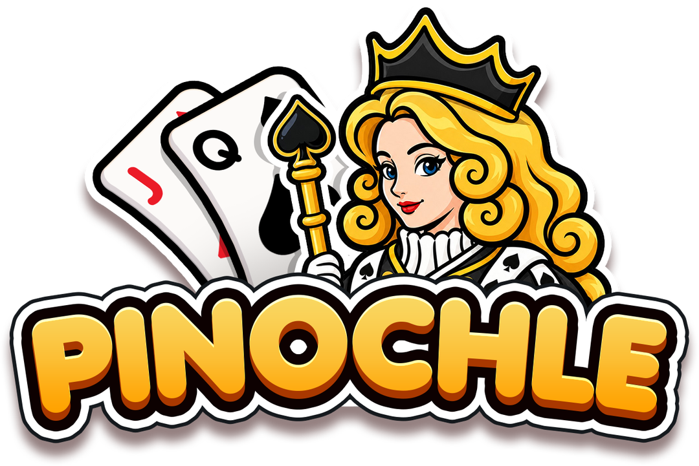
96 playing
212 playing
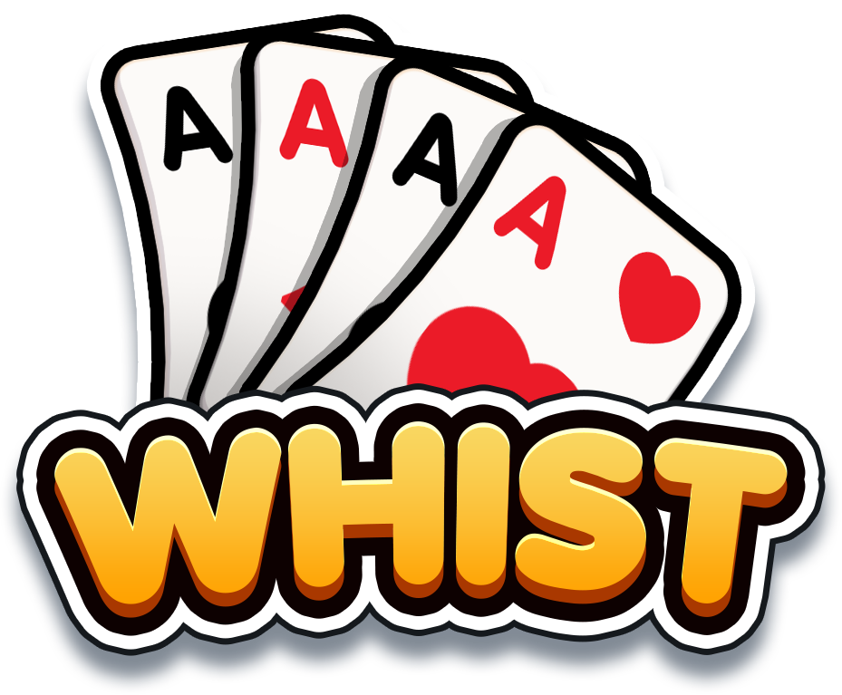
17 playing
23 playing
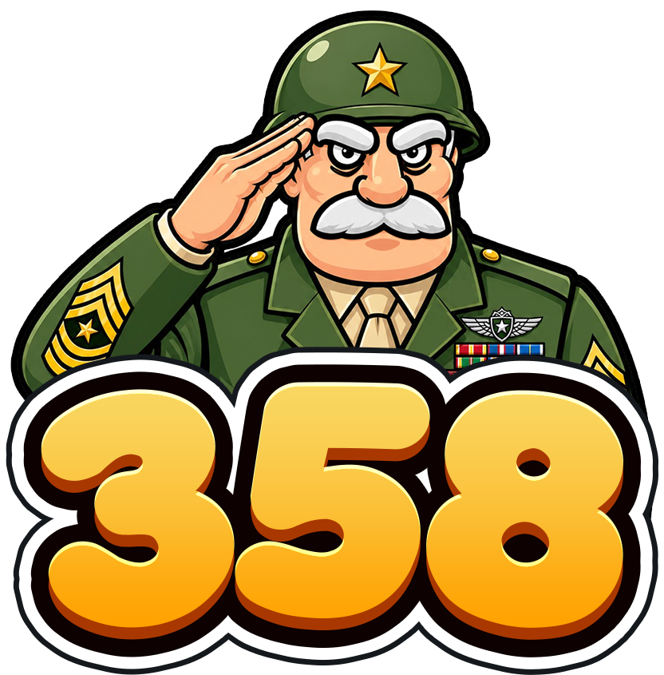
12 playing
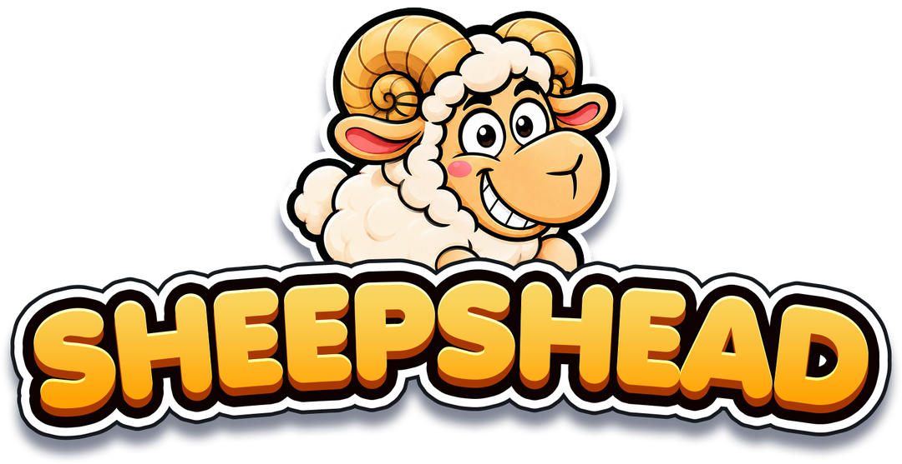
Rummy games
45 playing
87 playing
128 playing
64 playing
Classic games
76 playing
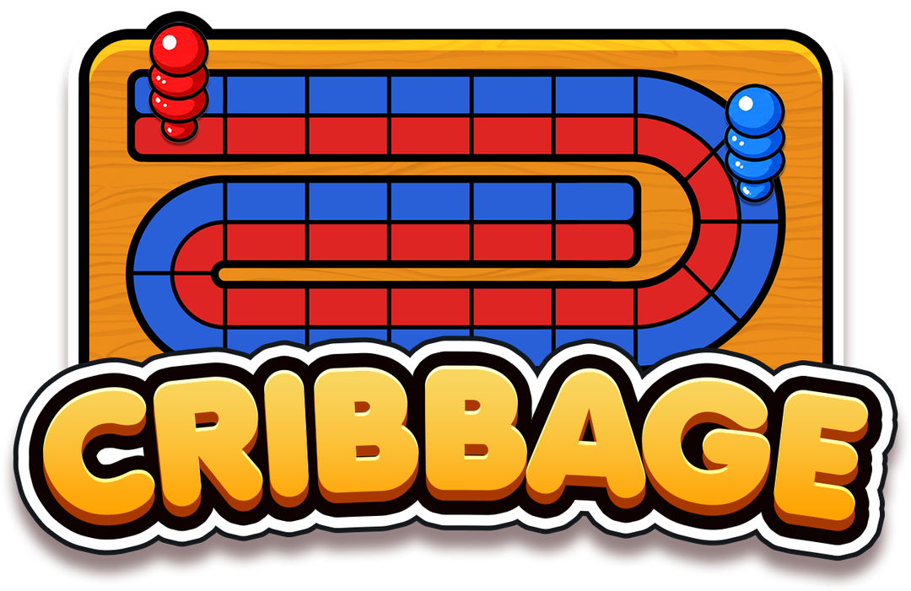
39 playing
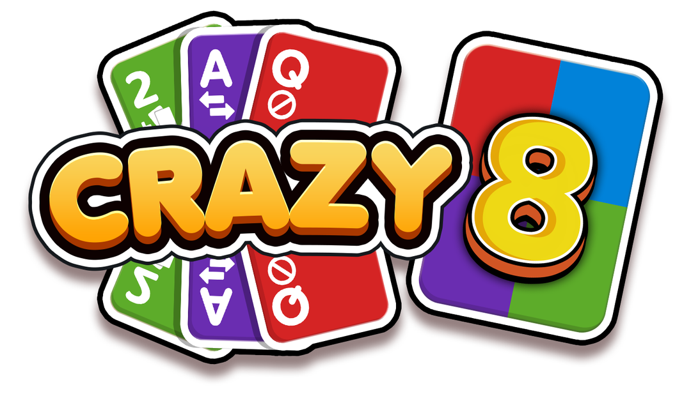
21 playing
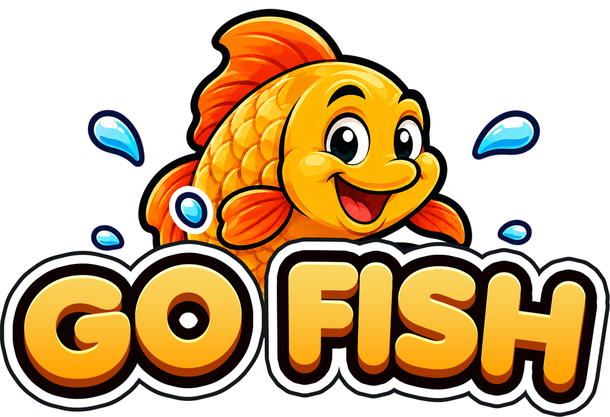
14 playing
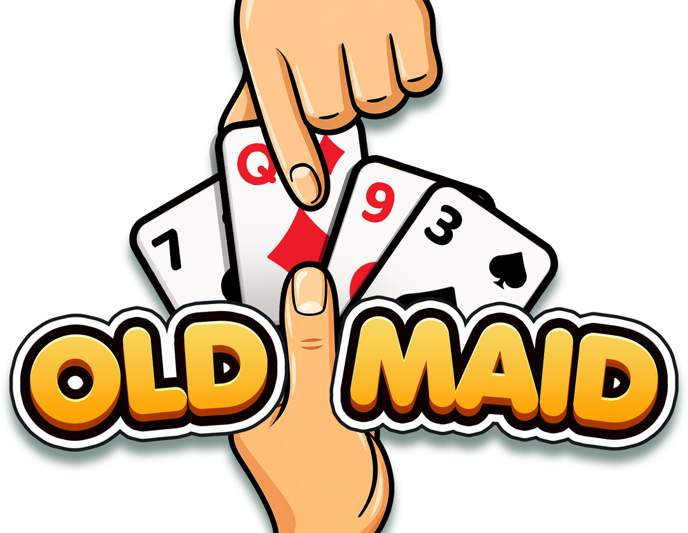
All games
Trick-taking gamesSee all 10 →
341 playing
173 playing
Rummy gamesSee all 4 →
128 playing
87 playing
Classic gamesSee all 4 →
76 playing
39 playing